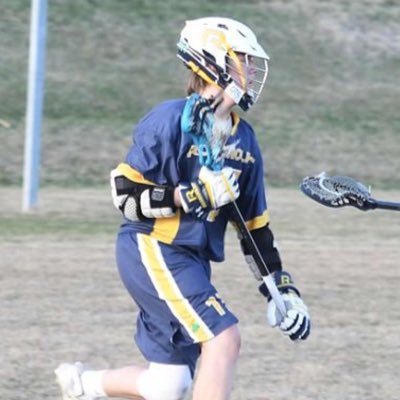

I am a Junior attending Rosemount High School. Born September 12th, 2002, I have always had a fascination with computers. Early on it became clear that I enjoyed math and that I was rather good at it. This love for math fueled my interest in computers and the programming behind them because of the similarities between it and math. As of now I don't have a particular college in mind for my post primary education, but I do know that I want to attend a college. Computer science or actuarial science are the two majors I'm thinking of doing, however I have not yet decided between the two. I have been playing lacrosse since I was six years old as well, thus I have some interest in also participating in collegiate lacrosse at some level.
Will Cochran